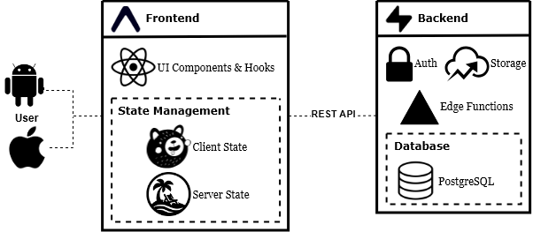

This showcases my final database schema for my project. The core educational content mainly lives in the modules, lessons, and any associative tables like module_lessons. User progress is tracked in user_module_progress and user_lesson_progress, and any information related to gamification features like level, XP, and streak_count is centralized in user_stats.
Figure 1: Current database schema on Supabase
Project Management
For project management, I combined an iterative and Kanban framework. Shown in Figure 2, I used Trello as a Kanban board to maintain a prioritized backlog of tasks for my MVP, organized into four categories: research, design, development, and class deliverables. This kept my work structured and traceable throughout the project. As I received feedback from my expert, instructor, and stakeholders, I iterated on my design and updated the backlog to reflect those changes. I used VSCode for my IDE and Git for source control, which is integrated into VSCode.
System Architecture
Figure 3 represents my initial system architecture. The frontend was developed in Expo, a React Native framework that simplifies cross-platform mobile development by abstracting away much of the native configuration required by bare React Native. It also allowed me to leverage other tools that simplified development like Expo Go for rapid prototyping and Expo Router for navigation. The backend uses Supabase as a BaaS, which provides a range of features that simplify backend development. Notably, I used the cloud hosted PostgreSQL database, authentication, file storage, RLS, and Database and Edge Functions for any server-side logic I needed in my app.
Figure 2: Initial System Architecture
As I got further into development, I started to explore and integrate some of the React libraries out there to streamline development. In particular, I used Zustand to manage global state, and TanStack Query to query and cache data from Supabase. For integrating animations, I also used Lottie. I explored using different UI frameworks, but wasn't satisfied with how they looked and wanted to have more control over the design, so I ended up building my own custom components and styles with StyleSheet.
Figure 3: Final System Architecture

User Interface
The following sections reflect the typical user flow through the application, covering authentication, the home screen, module navigation, lessons, quizzes, labs, and various gamification features.
When a user first opens the app, they are prompted to create an account or sign in with email/password or social login with Google.
Sign In
Once signed in, users land on the home screen, which displays a list of modules to choose from. For the MVP, I decided to create one end-to-end module about subnetting for the sake of demonstrating the core educational features, but the app is designed to scale to accommodate a comprehensive library of educational content. Selecting a module navigates to a list of activities, which include lessons, quizzes, and labs.
Home Page and List of ModulesList of Activities in Module
Lessons are meant to be short briefers about a networking concept, covering the key concepts a user need to know before completing an interactive exercise. Quizzes test users' understanding of what they learned and offer immediate feedback, which plays a critical role in helping them identify their knowledge gaps. As they complete lessons and quizzes, they accumulate XP (experience points) toward leveling up.
Labs simulate real networking scenarios like configuring subnet masks on a Cisco router CLI. The user walks through several steps by typing commands into the terminal. Internally, they're essentially implemented as short answer questions but the terminal aesthetic and a few small design choices like accepting command variations gives the users a feeling of immersion. Through this, they get to apply what they've learned in a more realistic context, which can help solidify their understanding and build confidence in their skills.
Labs
Daily reminders and streaks encourage users to stay consistent with th eir studies. The idea is that making progress visible and rewarding makes it easier to build the kind of study habit that certification preparation actually demands.